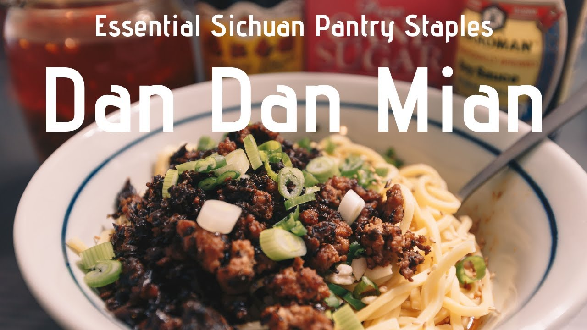

Dan Dan Mian

A simple weeknight noodle dish that beats any instant ramen
5 ingredients are what make up one of the most delicious sauces you'll ever have. Add this sauce to some fresh boiled noodles along with some garnishes to make it look pretty and you'll be the envy of every other college student in your dormitory.
Ingredients:
Sauce:
Chili oil:
- Oil
- Sichuan peppercorns
- Scallions
- Garlic
- Ginger
- Shallots
- Chili flakes
- Sugar
- Salt
Other sauce ingredients:
- Soy sauce
- Chiaking black vinegar
- Sugar
- Sesame paste
Pork topping:
- Ground pork
- Yacai
- Soy sauce
- Shaoxing cooking wine
- Oil
Assembly:
- Fresh alkaline noodles
- Chopped scallions
- Crushed roasted peanuts
- Sesame seeds
Steps:
Chili oil:
- Make the chili oil first if you don't have any already. Heat the oil up to 375 F or 190 C on the stovetop.
- While the oil is coming up to temp, toast the Sichuan peppercorns over low heat in a dry pan for a few minutes until fragrant. Transfer to a mortar and pestle, and crush until fine.
- Chop the remaining ingredients into a small dice, and transfer to a large metal bowl with the peppercorns, chili flakes, salt, and sugar.
- Place your bowl on your stovetop, turn the range hood on the highest fan setting, and carefully pour the hot oil over the mixture. Stir with a spatula until fully incorporated and mixed, and let cool completely before transferring to a jar.
Pork topping:
- Marinade the ground pork in a small bowl with 1 tablespoon each of the soy sauce and cooking wine. Optionally add a pinch of salt and sugar.
- Heat the oil in a pan (or preferably a wok) over high heat until just beginning to smoke. Add the pork and stir fry for about 2-3 minutes, or until no more pink is visible. Add the yacai, mix together, and then add the remaining tablespoons on soy sauce and cooking wine. Fry for 1 more minute until the alcohol is gone, and then remove from the heat.
Assembly:
- Put a pot of water on to boil.
- Combine the soy sauce, vinegar, sugar, and chili oil in the bowl that you plan on eating out of. Once the water is close to boiling, take a ladleful and combine it with the sesame paste in another small bowl, stirring until completely smooth. Pour the sesame sauce into the noodle bowl and mix everything together until homogenous.
- Cook your noodles according to the package instructions and transfer them directly from the pot into your bowl so that some of the cooking water comes along with them. Add more cooking water if you want a thinner consistency to the sauce.
- Top the noodles with the scallions, peanuts, sesame seeds, and the pork topping.
- Mix together at the dining table and devour.